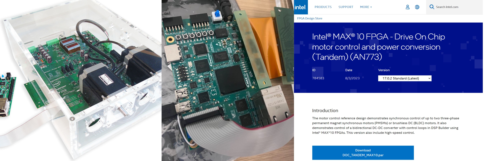

Intel FPGA Work
Duration: Jul 2022 - Aug 2023
Image from Intel Website
Projects Undertaken @ Intel
- Hardware Acceleration: Transform software speed PI control loop to hardware
- Verification: Speed Estimator Test-bench
- Release of High Speed Motor Drive-on-Chip
- User-Friendly Motor Drive-on-Chip
Hardware Acceleration of Speed PI Control
- Results: Optimized FOC runtime by 25% by implementing hardware acceleration, transforming software speed Proportional Integral (PI) control loop to hardware while only utilising 1% extra logic and 0.04% memory bits in the FPGA device.
- Pioneered debug architecture and guided position Position colleague to enable full stack being hardware-accelerated.
- Challenges: Debugging challenges in the hardware-software interaction layer.
- Lack of Testbench or Debug Mechanism: The absence of an existing testbench or debug mechanism for the DSP models auto-generated in HDL made it difficult to identify and rectify issues in the implementation.
- Closed-Loop Feedback System Challenges: The control loop in Motor DoC operates as a closed-loop feedback system. Minor scaling faults or misplacement of values led to unpredictable outputs, highlighting the sensitivity of the system.
Verification: Speed Estimator Testbench
- Results: Fixed over 25 bugs by testbench verification of speed estimator IP.
- Initiated to automate testbench via SystemVerilog function, accelerating another development of testbench of speed IP by 70%.
- Initiated integration testing to the Motor Drive system which uncovered previous engineering work mistakes and resolved over 3 hardware critical issues.
- My work is used as the foundation to build hardware acceleration of speed calculation IP.
- Challenges: Integration testing part.
- To perform board integration testing of the speed estimator IP, have to integrate the speed estimator IP into the Motor DoC system by learning shell scripting (TCL Scripting).
- Board integration testing also reveals multiple hardware issues that weren't caught during verification of a single block of the component as there are issues when it interacts with the system.
Release of High Speed Motor Drive-on-Chip Design
- Results: Released high-speed motor drive control design, collaborating with over 11 Intel colleagues globally.
- Guided peers for new code analysis tools and streamlined internal processes thus reducing future release time by 33%.
- Proposed to consolidate all AN773 Motor Designs into a single-page format on the Design Store to enhance searchability and eliminate confusion arising from multiple duplicates.
- Corrected minor software issues based on code analysis results, actively engaged in code reviews, and contributed to hardware architecture reviews in adherence to Software Development protocols.
- Challenges: Facing organizational, and communication challenges in addition to the technical process demonstrates the multi-faced nature of the software release process.
- Learning Curve for New Tools: The introduction of new tools and processes, such as the Coverity Static Analysis toolkit, required additional time for the student to adapt and integrate them into the release procedures.
- Interdependence of Documentation and Design Store Link:Managing the relationship between the documentation PDF and the Design Store link posed difficulties. The documentation needed to be included in the design uploaded but it requires the design link in the documentation itself.
- Version Conflict with Design Store Team: The Design Store release team based in Asia lacked the necessary Quartus version for the AN773 design. This caused delays due to version conflicts, requiring effective communication and some off-hours meetings to release the designs on time.
User-Friendly Motor Drive-on-Chip
- Results: Reduced compile time by 39% by refactoring motor drive-on-chip software written in C, using modular software approach. Code imported to new FPGA Motor DoC design.
- The User-Friendly software is preferred by Intel Customers compared to the old Motor DoC version.
- Challenges: Hardware-software interaction layer limitations when performing software optimization.
- The intercoupling nature of the hardware and software layer presented challenges in isolating code for distinct functions, as the code meant to run separately was intertwined at the hardware Register Transfer Level, making the separation process challenging. imported to new FPGA Motor DoC design.
- Working with another engineer in the project, the process of removing features and verifying them requires careful synchronization via version control.